Premis E-TECH
ORGANIZA
PATROCINA
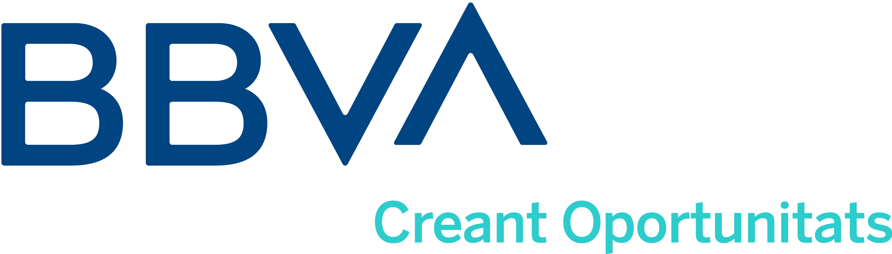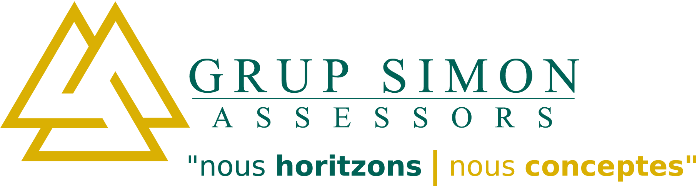
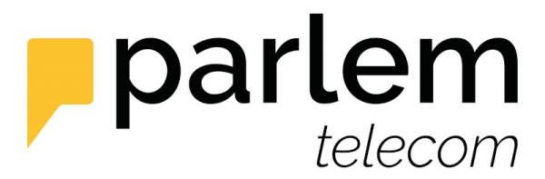
AMB EL SUPORT DE:
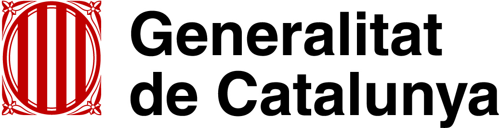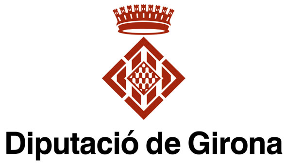
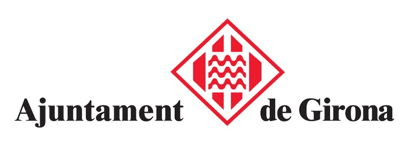
MEDIA PARTNERS
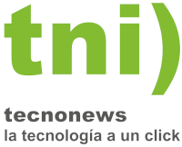Premis E-TECH 2021: resum i llistat de guanyadors
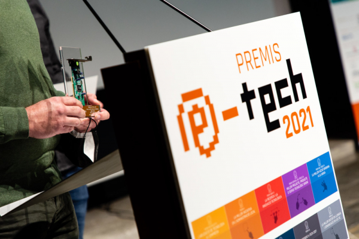
Enguany tornàvem a certa normalitat, malgrat que les mascaretes i el gel hidroalcohòlic van seguir presents, com fantasmes que ens persegueixen d'un passat del qual volem girar full ràpidament. La presencialitat, doncs, i l'Auditori Josep Irla de la Generalitat, van acollir una nova edició dels guardons, però abans vam tenir moltes coses més.
La jornada matinal va començar amb una recepció oficial a l'Ajuntament de Girona, on les autoritats locals i els representants del teixit TIC gironí van donar la benvinguda als representants del teixit tecnològic nord-català, entre ells Armelle Revel-Fourcade, alcaldessa d'El Soler i vicepresidenta a càrrec de les relacions transfrontereres de la Metròpoli Perpinyà-Mediterrani, Pierre Roca, president de Pôle Action Média, i Flavien Noël, director de la mateixa entitat. recepcio oficial...
Llegir mes
Així serà la Jornada E-TECH 2021, amb la gala de lliurament dels guardons
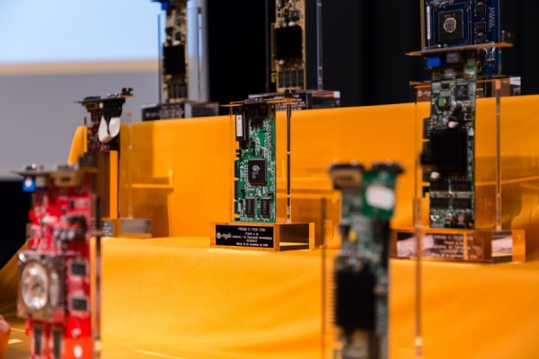
A falta poc! La cita per a la gala dels Premis és el vinent dilluns dia 15 de novembre a partir de les 16:30, i els escenaris seran dos: l'Auditori Josep Irla per a les conferències prèvies i la gala de lliurament, i la Casa de Cultura (just davant mateix del Josep Irla) per al tradicional piscolabis i copa de cava per celebrar l'èxit de la vetllada...
Llegir mes
Anna Navarro Descals (Anna N. Schlegel) guanyadora del Premi Referent E-TECH 2021
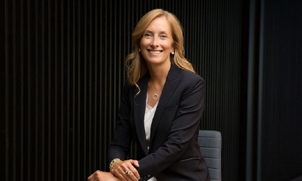
La junta directiva de l'AENTEG anuncia la seva decisió d'atorgar el Premi Referent E-TECH 2021 a Anna Navarro Descals (Anna N. Schlegel), actual vicepresidenta de producte, mercats internacionals, infraestructura global, i globalització de Procore Technologies, per l’excel·lència en la seva tasca directiva desenvolupada en diverses empreses capdavanteres del sector tecnològic, i per la seva tasca d'ambaixadora del territori al Silicon Valley i la resta del món...
Llegir mes
Premis E-TECH 2021 (15a edició)
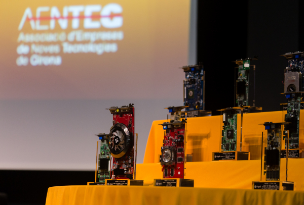
Enguany tornàvem a certa normalitat, malgrat que les mascaretes i el gel hidroalcohòlic van seguir presents, com fantasmes que ens persegueixen d'un passat del qual volem girar full ràpidament. La presencialitat, doncs, i l'Auditori Josep Irla de la Generalitat, van acollir una nova edició dels guardons, però abans vam tenir moltes coses més.
La jornada matinal va començar amb una recepció oficial a l'Ajuntament de Girona, on les autoritats locals i els representants del teixit TIC gironí van donar la benvinguda als representants del teixit tecnològic nord-català, entre ells Armelle Revel-Fourcade, alcaldessa d'El Soler i vicepresidenta a càrrec de les relacions transfrontereres de la Metròpoli Perpinyà-Mediterrani, Pierre Roca, president de Pôle Action Média, i Flavien Noël, director de la mateixa entitat...
Llegir mes
BBVA: la importància de reconèixer la digitalització de l’empresa
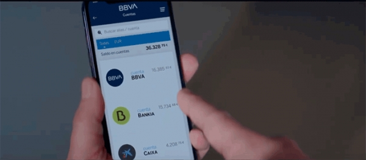
Des de BBVA som patrocinadors des de fa anys dels Premis E-TECH perquè compartim la seva filosofia i ens agrada premiar i reconèixer la tecnologia en l'àmbit empresarial. Però aquesta edició, en un any tan complicat com el que estem vivint a conseqüència de la Covid-19, ens agrada més que mai donar a conèixer i posar en valor iniciatives de les comarques gironines que han ajudat les empreses i a la societat en general.
Ens agrada destacar el guardó que es va lliurar a tota la comunitat TIC que ha utilitzat la tecnologia per lluitar contra la Covid-19, ja que han estat molts els projectes que s’han desenvolupat i portat a terme. Una mostra clara de la vitalitat del sector TIC i les ganes de contribuir i ajudar en un moment tan complicat com l’actual. Enguany no hi ha dubte que la digitalització està essent un element clau per a tots. I per a BBVA digitalització i empresa són dos conceptes molt rellevants. La digitalització perquè fa anys que ens defineix per oferir solucions als nostres clients des de qualsevol lloc i a qualsevol hora. I les empreses perquè són el principal motor de l’economia del país, perquè generen ocupació, i perquè, entre altres coses, promouen la innovació que fa que també avancem com a societat...
Llegir mes
Parlem telecom: la potència del sector TIC a l’economia catalana
Enguany s’ha celebrat la catorzena edició dels Premis E-TECH i Parlem telecom, l’operadora de telecomunicacions de Catalunya, n’ha sigut un dels patrocinadors. Per nosaltres és tot un orgull haver lliurat el Premi al millor projecte, producte o servei digital Gironí a Chatforce.tech, que destaquen pel seu impacte al mercat, el seu potencial i la qualitat de la solució que ofereix als seus usuaris. El projecte, que el van desenvolupar el 2019, es tracta d’un xat professional simple, segur i legal, orientat a la comunicació dins les empreses. La principal característica d’aquest és la maximització de la capacitat comunicativa de l’empresa, minimització de riscos i fugues d’informació, i tot a través d’una eina pròpia i legal...
Llegir mes
Premis E-TECH 2020: aquests han estat els guanyadors
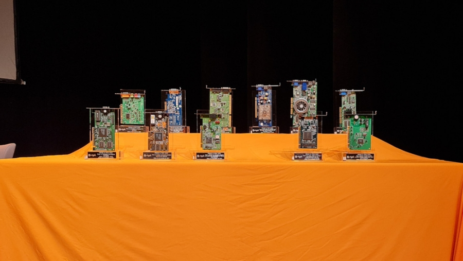
Un any més (i ja en van catorze!), la ciutat de Girona ha acollit la gala d’entrega dels Premis E-TECH. Tot i que l’acte no ha pogut ser fet com en anys anteriors (l’any passat va acollir 140 persones, enguany ha hagut de ser a porta tancada i emès per YouTube), des de l’AENTEG hem volgut tirar-lo endavant com a mostra de la resiliència i la ferma determinació davant les adversitats que mostra la nostra associació, i la societat gironina per extensió. En aquestes circumstàncies, la durada de l’acte es va escurçar considerablement, començant la jornada a les 17:15 amb una prèvia en la qual els patrocinadors dels guardons van tenir la paraula, per continuar a les 17:30 amb una conversa amb els dos encarregats d’acceptar i rebre el Premi Referent E-TECH 2020...
Llegir mes
Així serà la cerimònia de lliurament dels Premis E-TECH
Abans de res, i en nom de l’organització, demanar disculpes pels canvis de darrera hora, car hem estat fins al diumenge dia 15, pendents de conmfirmació d'alguns dels continguts previs a la cerimònia. El motiu és senzill: aquest any atípic que vivim, i que ens ha obligat a fer canvis sobre la marxa, així com ha dificultat també la tasca d’aquelles persones amb les qui hem de treballar. Les coses, a darrera hora, no surten mai tan bé com voldríem, però som aquí i celebrem la gala. Una mostra més de la resiliència de l’AENTEG i de la societat gironina...
Llegir mes
El col·lectiu TIC, distingit amb el Premi Referent E-TECH 2020 per la lluita contra la COVID
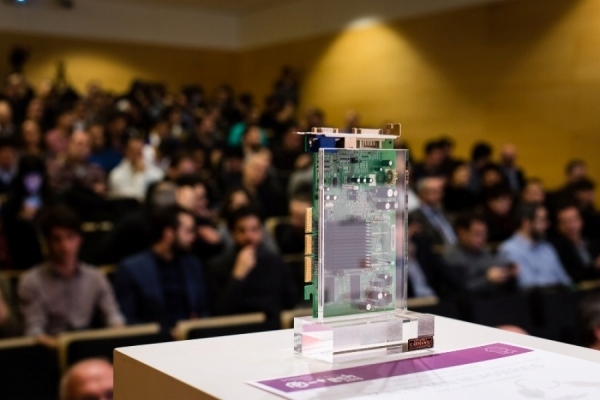
D'ençà del moment en què aquesta malaltia va arribar al nostre país i el nombre d’ingressats va anar augmentant, també es va disparar una onada de la solidaritat i es va organitzar la feina en comú per fer front a les necessitats de material mèdic i de protecció que el virus requeria. En aquest context, nombroses empreses de tecnologia van oferir desinteressadament els seus recursos, com ara les impressores 3D per a la construcció d’aparells respiradors o peces de recanvi per a aquests, i les bobines de material per a poder imprimir. Paral·lelament, els professionals del sector tecnològic, juntament amb els aficionats a la tecnologia, ajudaren totes aquelles persones i grups que, voluntàriament, es van dedicar a activitats com la confecció de mascaretes i la logística per a distribuir-les, mitjançant la creació de grups en els serveis de missatgeria instantània, o l’adaptació de programaris específics per a la traçabilitat de les entregues, entre d'altres activitats...
Llegir mes
Allarguem el termini de presentació de candidatures als Premis E-TECH

Conscients que tots plegats vivim uns dies i unes hores intenses per culpa de la situació sociosanitària, des de l’AENTEG hem decidit allargar el període de presentació de candidatures als Premis E-TECH 2020 fins aquest divendres vinent dia 30 d’octubre a les 23:59 hores...
Llegir mes